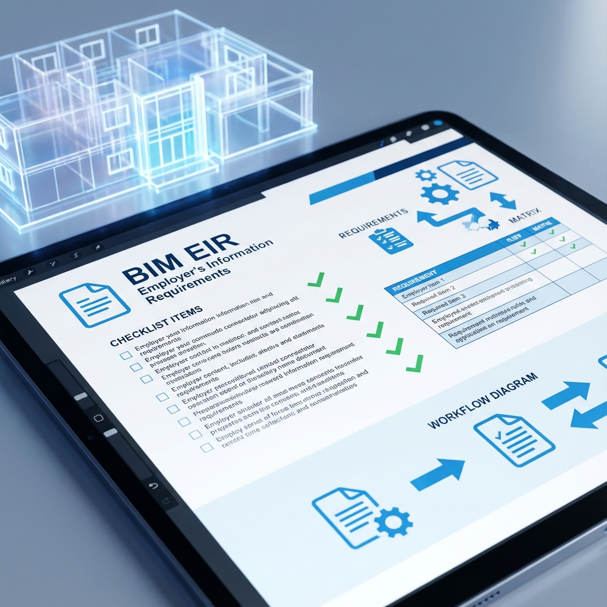

📚 هذا المقال جزء من سلسلة معايير BIM: EIR → BEP → CDE → LOD → IFC → COBie
📋 الفهرس
- ما هو EIR؟
- أهمية EIR في المشاريع
- EIR في سياق ISO 19650
- محتويات وثيقة EIR
- كيف تكتب EIR؟
- أمثلة عملية
- العلاقة مع BEP
- نماذج جاهزة
📄 1. ما هو EIR؟
EIR (Employer's Information Requirements) هي وثيقة رسمية تُصدرها الجهة المالكة للمشروع (Employer/Client) تحدد فيها جميع متطلباتها من المعلومات التي تحتاجها من فريق التصميم والتنفيذ عبر استخدام BIM.
⚠️ تغيير المسمى في ISO 19650:
في النسخة الجديدة من ISO 19650، تم استبدال مسمى EIR بـ:
OIR (Organizational Information Requirements) - متطلبات المنظمة
AIR (Asset Information Requirements) - متطلبات معلومات الأصل
PIR (Project Information Requirements) - متطلبات معلومات المشروع
لكن EIR لا يزال الأكثر استخداماً في الممارسة العملية.
في النسخة الجديدة من ISO 19650، تم استبدال مسمى EIR بـ:
OIR (Organizational Information Requirements) - متطلبات المنظمة
AIR (Asset Information Requirements) - متطلبات معلومات الأصل
PIR (Project Information Requirements) - متطلبات معلومات المشروع
لكن EIR لا يزال الأكثر استخداماً في الممارسة العملية.
1.1 التعريف البسيط:
EIR = "ماذا يريد المالك من BIM في هذا المشروع؟"
1.2 من يُعد EIR؟
- المالك (الجهة المالكة للمشروع)
- أو مستشار BIM يعمل نيابة عن المالك
- أو مدير المشروع بالتنسيق مع المالك
1.3 متى يُعد EIR؟
- قبل طرح المناقصة (Tender Stage)
- يُرفق مع وثائق المناقصة
- يُستخدم كمعيار لتقييم عروض المقاولين/المصممين
🎯 2. أهمية EIR في المشاريع
2.1 لماذا EIR مهم؟
| بدون EIR | مع EIR |
|---|---|
| لا توجد معايير واضحة | معايير محددة ومقاسة |
| كل طرف يعمل بطريقته | توحيد العمل بين الأطراف |
| خلافات حول جودة النموذج | معايير قبول واضحة |
| ضياع فوائد BIM | تحقيق ROI من BIM |
| مخرجات غير متوافقة | مخرجات موحدة ومتسقة |
2.2 فوائد EIR:
- وضوح التوقعات: الجميع يعرف ما هو مطلوب
- أساس للتعاقد: يُدخل في العقد كملحق تعاقدي
- معيار للتقييم: تقييم عروض المناقصات
- تقليل النزاعات: معايير واضحة = خلافات أقل
- ضمان القيمة: الحصول على ما تريده فعلاً
🌍 3. EIR في سياق ISO 19650
3.1 هرمية المتطلبات حسب ISO 19650:
1
OIR - Organizational Info Requirements
ما تحتاجه المنظمة ككل
2
AIR - Asset Info Requirements
ما تحتاجه لتشغيل الأصل/المبنى
3
PIR - Project Info Requirements
ما تحتاجه خلال مراحل المشروع
4
EIR - Exchange Info Requirements
ما يجب تسليمه في كل مرحلة
3.2 دورة تبادل المعلومات:
- المالك: يُعد EIR ويطرحه في المناقصة
- المتقدمون: يقدمون Pre-BEP (خطة BIM أولية)
- الفائز: يُعد BEP تفصيلي استجابةً لـ EIR
- التنفيذ: العمل وفق BEP والتسليم حسب EIR
📑 4. محتويات وثيقة EIR
تنقسم EIR عادةً إلى ثلاثة أقسام رئيسية:
4.1 المتطلبات التقنية (Technical Requirements)
| البند | الوصف | مثال |
|---|---|---|
| البرامج | البرامج المطلوب استخدامها | Revit 2024, Navisworks 2024 |
| الصيغ | صيغ الملفات المقبولة | .rvt, .ifc, .nwc, .pdf |
| LOD | مستوى التفصيل لكل مرحلة | LOD 200 للتصميم المبدئي |
| التنسيق | نظام الإحداثيات والوحدات | متر، WGS84 |
| التسمية | معايير تسمية الملفات | PRJ-ZON-DIS-TYP-NUM |
| CDE | بيئة البيانات المشتركة | BIM 360, Autodesk Docs |
4.2 المتطلبات الإدارية (Management Requirements)
| البند | الوصف |
|---|---|
| الأدوار والمسؤوليات | من يفعل ماذا في BIM |
| جدول التسليم | متى يُسلّم كل نموذج/تقرير |
| مراجعة الجودة | كيف يتم فحص النماذج |
| إدارة التغييرات | كيف تُوثّق التعديلات |
| الاجتماعات | تكرار وأجندة اجتماعات BIM |
| التدريب | متطلبات تدريب الفريق |
4.3 المتطلبات التجارية/الاستراتيجية (Strategic Requirements)
| البند | الوصف |
|---|---|
| أهداف BIM | لماذا نستخدم BIM في هذا المشروع |
| استخدامات BIM | BIM Uses المطلوبة (Clash Detection, 4D, 5D...) |
| مخرجات FM | ما يُحتاج لإدارة المرافق |
| COBie | متطلبات تسليم بيانات التشغيل |
| ملكية البيانات | من يملك النموذج والبيانات |
✍️ 5. كيف تكتب EIR؟
5.1 الخطوات العملية:
- فهم احتياجات المالك:
- ما الهدف من BIM؟ (تقليل تكلفة؟ تسريع؟ تسهيل FM؟)
- ما المخرجات المطلوبة؟
- ما القدرات التقنية للمالك؟
- تحديد BIM Uses:
- Design Authoring
- Clash Detection
- 4D Scheduling
- 5D Cost Estimation
- Facility Management
- تحديد LOD لكل مرحلة:
- مرحلة المفاهيم: LOD 100-200
- التصميم الأولي: LOD 200-300
- التصميم التفصيلي: LOD 300-350
- التنفيذ: LOD 350-400
- As-Built: LOD 500
- تحديد المتطلبات التقنية
- تحديد جداول التسليم
- مراجعة مع أصحاب المصلحة
5.2 نصائح لكتابة EIR فعّال:
- ✅ كن محدداً وواضحاً (لا غموض)
- ✅ اربط كل متطلب بهدف محدد
- ✅ تأكد من قابلية التطبيق (واقعية)
- ✅ استخدم جداول ورسومات توضيحية
- ✅ راجع مع خبير BIM
- ❌ لا تنسخ EIR من مشروع آخر بدون تعديل
- ❌ لا تطلب ما لا تحتاجه فعلاً
📝 6. أمثلة عملية
6.1 مثال على متطلبات LOD:
| العنصر | التصميم المبدئي | التصميم التفصيلي | التنفيذ | As-Built |
|-----------------|-----------------|------------------|------------|----------|
| الأعمدة | LOD 200 | LOD 300 | LOD 350 | LOD 500 |
| الكمرات | LOD 200 | LOD 300 | LOD 350 | LOD 500 |
| التكييف (HVAC) | LOD 200 | LOD 300 | LOD 400 | LOD 500 |
| الكهرباء | LOD 200 | LOD 300 | LOD 400 | LOD 500 |
| التشطيبات | LOD 100 | LOD 200 | LOD 300 | LOD 400 |
6.2 مثال على معيار التسمية:
[Project]-[Zone]-[Discipline]-[Type]-[Number].[Extension]
أمثلة:
- HQ-B1-STR-MOD-001.rvt (نموذج إنشائي للبدروم 1)
- HQ-GF-ARC-MOD-001.rvt (نموذج معماري للدور الأرضي)
- HQ-00-MEP-MOD-001.rvt (نموذج MEP موحد)
6.3 مثال على BIM Uses المطلوبة:
- ☑️ Design Authoring: إنتاج جميع الرسومات من النموذج
- ☑️ 3D Coordination: تنسيق أسبوعي مع Clash Detection
- ☑️ Quantity Takeoff: حصر الكميات من النموذج (LOD 300+)
- ☑️ 4D Scheduling: ربط مع Primavera P6
- ☐ 5D Cost: غير مطلوب في هذا المشروع
- ☑️ FM Handover: تسليم COBie في نهاية المشروع
🔗 7. العلاقة مع BEP
7.1 EIR vs BEP:
| EIR | BEP |
|---|---|
| يُعده المالك | يُعده المقاول/المصمم |
| يُحدد ما هو مطلوب | يُوضح كيف سيُنفذ |
| قبل المناقصة | بعد الترسية |
| السؤال: ماذا تريد؟ | الإجابة: هكذا سنفعله |
| معايير القبول | خطة التنفيذ |
7.2 التسلسل:
1
المالك يُعد EIR
تحديد جميع متطلبات المعلومات
2
EIR يُرفق في وثائق المناقصة
جزء من مستندات العقد
3
المتقدمون يُعدون Pre-BEP
خطة أولية للاستجابة للمتطلبات
4
الفائز يُعد BEP تفصيلي
خطة تنفيذ BIM الكاملة
5
المالك يُراجع ويعتمد BEP
الموافقة على خطة التنفيذ
6
التنفيذ وفق BEP
العمل والتسليم حسب الخطة المعتمدة
📁 8. نماذج جاهزة
8.1 هيكل EIR المقترح:
- مقدمة: معلومات المشروع والغرض من EIR
- أهداف BIM: لماذا نستخدم BIM
- BIM Uses: قائمة الاستخدامات المطلوبة
- المتطلبات التقنية: البرامج، الصيغ، المعايير
- LOD Matrix: جدول LOD لكل عنصر ومرحلة
- جدول التسليم: متى يُسلّم ماذا
- CDE: بيئة البيانات المشتركة
- الأدوار والمسؤوليات: من يفعل ماذا
- ضمان الجودة: كيف نفحص النماذج
- التسليم النهائي: COBie و As-Built
- ملاحق: نماذج، قوالب، مراجع
💡 نصيحة: ابدأ بقوالب EIR المتاحة من UK BIM Framework أو buildingSMART وعدّلها حسب مشروعك.
المقال التالي: BEP: خطة تنفيذ BIM - الدليل الشامل